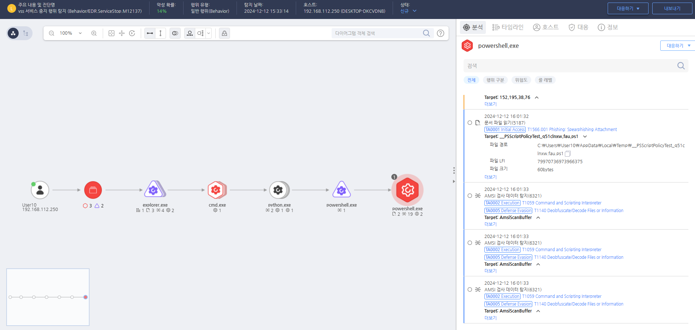

T1489.000.01 VSS 서비스 중지
D3FEND
MITRE ATT&CK 액션을 기준으로 대응 방안을 작성
Detection
모니터링을 통해 VSS 서비스 중지 행위를 확인합니다.
Detection(EDR)

https://172.18.10.125:8903/#/analysis/incident/675a842e002dc7960000416c
Response
공격자가 수정한 서비스를 원복합니다.
Mitigations
서비스 권한 제한 (M1026 - Privileged Account Management)
- 서비스 중지 권한 최소화: 일반 사용자에게 시스템 서비스나 보안 서비스 중지 권한을 제한
- 서비스 계정에 대한 강력한 인증 및 최소 권한 원칙 적용
- 관리자 계정에 대한 다단계 인증(MFA)을 사용하여, 관리자 권한을 악용한 서비스 중지 시도 차단
서비스 중지 모니터링 및 알림 설정 (M1047 - System Logging & Monitoring)
- Event ID 7036 (서비스 상태 변경) 및 Event ID 4688 (새로운 프로세스 생성)을 사용하여 서비스 상태 변경을 실시간으로 모니터링
- 서비스 중지 시 알림 설정: 보안 관리자가 서비스가 중지될 때 자동 알림을 받을 수 있도록 시스템 설정
- EDR/XDR 솔루션을 사용하여 의심스러운 서비스 중지 활동을 탐지하고 즉각적인 대응 가능
서비스 복원 및 자동화 (M1022 - Automated Response)
- 서비스 복원 자동화: 중요한 보안 서비스(예: 방화벽, AV)의 자동 재시작을 설정하여 서비스 중지 시 자동으로 복구되도록 구성
- 서비스 복구 스크립트를 만들어 서비스 중지 후 자동으로 재시작되도록 설정
- 보안 시스템에서 서비스가 중지될 경우 자동으로 해당 서비스 재시작 기능을 활성화
시스템 보안 소프트웨어 강화 (M1027 - Password Policies)
- 보안 소프트웨어에 대한 액세스 제한: 보안 시스템(방화벽, AV 등)에 대한 액세스를 관리자만 수행할 수 있도록 제한
- 보안 소프트웨어 설정을 강력히 보호하고, 필요 시 서비스를 잠금하거나 비밀번호 변경 주기 설정
- 보안 소프트웨어 서비스에 대한 권한 제어를 강화하여 악용 가능성 최소화
네트워크 세분화 및 방화벽 정책 (M1031 - Network Segmentation)
- 중요 시스템에 대한 네트워크 세분화를 통해 공격자가 시스템 서비스 중지 및 방해 시도에 대한 접근을 차단
- 방화벽을 통해 서비스 중지 시도 차단: 중요 서비스가 외부로부터 영향을 받지 않도록 방화벽 및 액세스 제어 설정
- 서버 및 서비스에 대한 별도 네트워크 세분화를 통해 공격자가 하나의 네트워크에서 서비스를 중지하더라도 다른 네트워크에는 영향을 미치지 않도록 설계
Affected Techniques
Action 실행시 함께 영향을 받는 다른 Techniqes
| D3FEND |
| D3-PT Process Termination |
| D3-PS Process Suspension |
| D3-PM Platform Monitoring |